Valorant é um jogo eletrônico multijogador gratuito para jogar de tiro em primeira pessoa desenvolvido e publicado pela Riot Games.

Lançada em 24 de novembro, a coleção Champions 2021 é uma conjunto de itens em edição limitada com o valor de 6.263 Valorant Points (VPs), contendo skins para Vandal (2.675 VPs), Karambit (5.350 VPs) e diversos acessórios como cards (375 VPs cada) e um título (200 VPs).
Riot Games é uma empresa americana fundada como um estúdio de jogos independente em 2006 por Brandon "Ryze" Beck e Marc "Tryndamere" Merril, em Los Angeles. Em 2015 foi comprada pela empresa chinesa Tencent

Instale o jogo e Abra o css

Brimstone:Vindo diretamente dos EUA, o arsenal orbital de Brimstone garante que o esquadrão dele esteja sempre em vantagem. Sua capacidade de oferecer utilidade com precisão a distância faz dele um comandante inigualável na linha de frente.

Viper:Viper, a química dos Estados Unidos, emprega uma variedade de dispositivos químicos venenosos para controlar o campo de batalha e prejudicar a visão do inimigo. Se as toxinas não matarem a presa, seus jogos mentais certamente o farão.
Sage:Como uma verdadeira fortaleza chinesa, Sage traz segurança para si mesma e para a equipe aonde quer que vá. Capaz de reviver aliados e rechaçar investidas agressivas, ela oferece um centro de calmaria em meio ao caos da batalha.
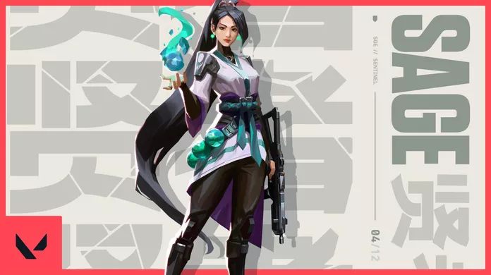Omen: Omen, uma lembrança fantasmagórica, caça nas sombras. Ele cega os inimigos, teleporta-se pelo campo e deixa a paranoia assumir o controle enquanto o adversário tenta descobrir de onde virá seu próximo ataque.
Killjoy: Killjoy, uma alemã genial, defende o campo de batalha facilmente usando seu arsenal de invenções. Se o dano causado por seu equipamento não der cabo dos inimigos, os efeitos negativos de seus queridos robôs dão conta do recado.
Cypher:Cypher, um vendedor de informações do Marrocos, é uma verdadeira rede de vigilância de um homem só que fica de olho em cada movimento dos inimigos. Nenhum segredo está a salvo. Nenhuma manobra passa despercebida. Cypher está sempre vigiando.
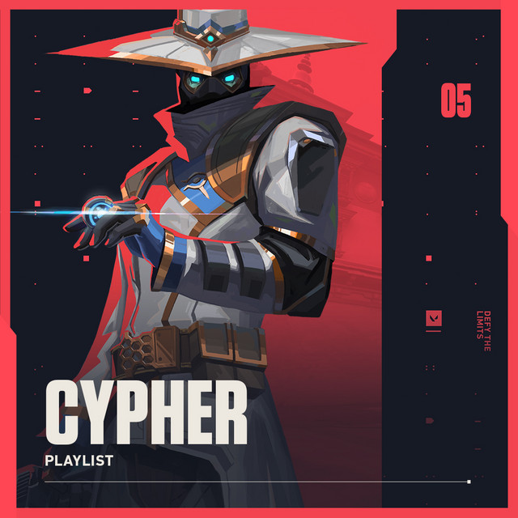Sova:Nascido sob o eterno inverno das tundras russas, Sova rastreia, encontra e elimina inimigos com eficiência e precisão implacáveis. Seu arco personalizado e suas habilidades inigualáveis de reconhecimento garantem que nenhuma presa escape.
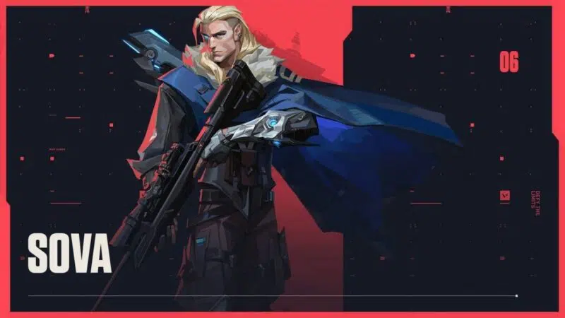Phoenix:Chegando com tudo diretamente do Reino Unido, o poder estelar de Phoenix reluz em seu estilo de luta, incendiando o campo de batalha com luz e estilo. Tendo ajuda ou não, ele entra na luta como e quando achar que deve.
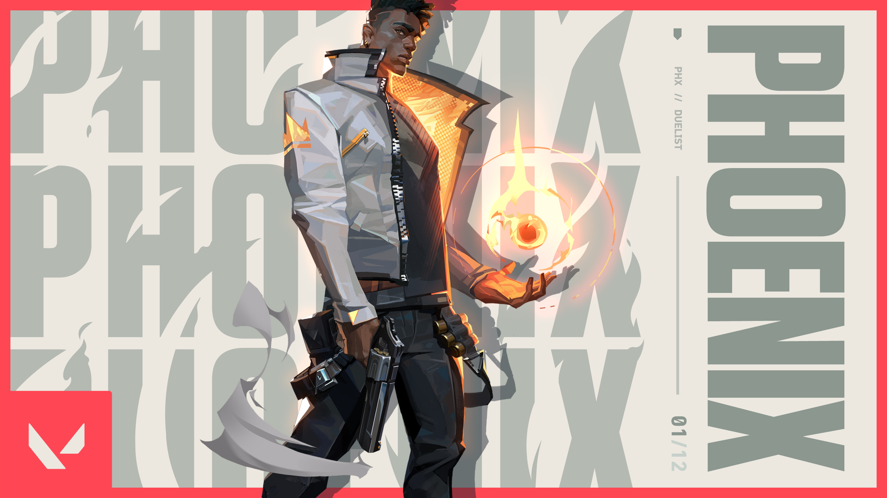Jett: Representando a Coreia do Sul, sua terra natal, Jett tem um estilo de luta ágil e evasivo que permite que ela assuma riscos como ninguém. Ela corre em meio a qualquer confronto, cortando os inimigos antes mesmo que eles percebam quem ou o que os atingiu.
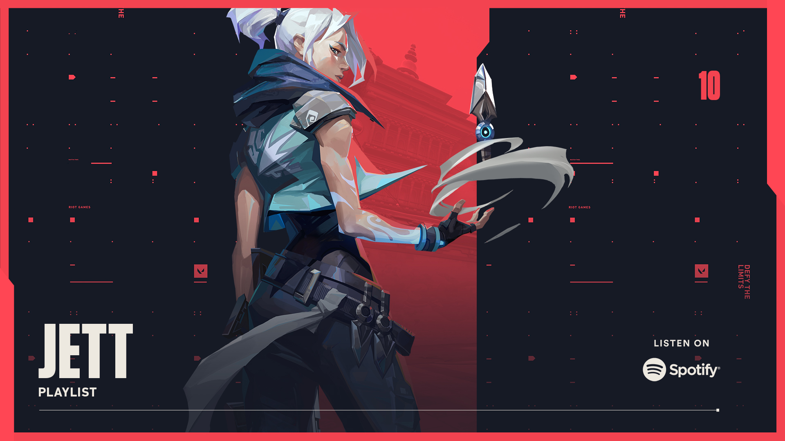Reyna: Criada no coração do México, Reyna domina o combate individual, destacando-se a cada abate efetuado. Sua capacidade só é limitada por sua própria perícia, tornando-a bastante dependente de desempenho.
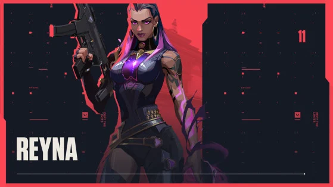Raze:Raze chega do Brasil em uma explosão de carisma e armas letais. Com seu estilo de jogo "porradeiro", ela é craque em desentocar inimigos entrincheirados e limpar espaços apertados com uma bela dose de BUUUM!
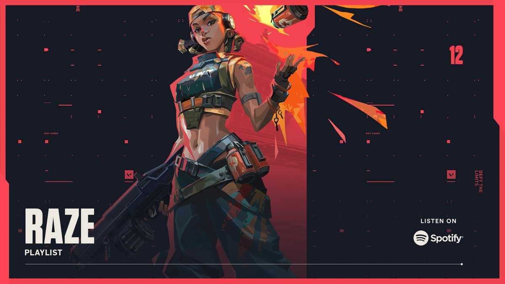Breach: Breach, o homem-biônico sueco, dispara poderosos jatos cinéticos para forçar a abertura de um caminho pelo território inimigo. O dano e a interrupção que ele causa garantem que nenhuma luta seja justa.
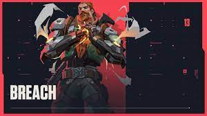Skye:Mandando um salve direto da Austrália, Skye e sua equipe de feras desbravam territórios hostis. Com seus poderes de cura e suas criações que partem pra cima dos inimigos, qualquer equipe ficará mais forte e mais segura tendo Skye como aliada.
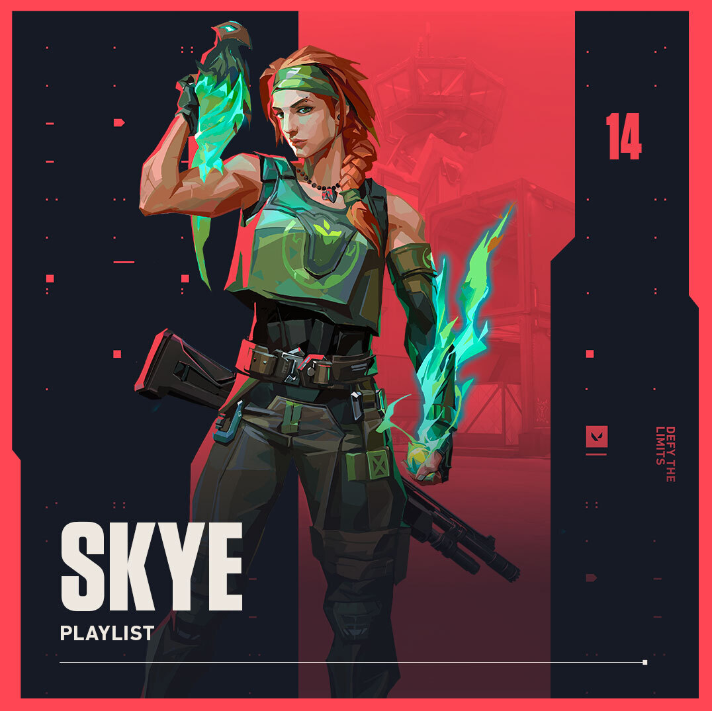Yoru: Yoru, nativo do Japão, abre fendas na realidade para infiltrar as linhas inimigas sem ser visto. Ele usa tanto artimanhas quanto táticas agressivas, e os alvos são abatidos sem saber de onde o ataque veio.

Astra: Astra, a Agente ganense, utiliza energias cósmicas para moldar o campo de batalha a seu bel-prazer. Com total domínio da sua forma astral e um talento estratégico nato, ela está sempre anos-luz à frente dos inimigos.

KAY/O: KAY/O é uma máquina de guerra construída com um único propósito: neutralizar Radiantes. Ele é capaz de suprimir habilidades inimigas, comprometendo a capacidade de contra-ataque dos adversários e dando a si próprio e a seus aliados uma vantagem essencial em combate.

Chamber: Bem vestido e armado até os dentes, o criador de armas francês Chamber coloca os inimigos para correr com uma precisão mortal. Use e abuse do arsenal personalizado dele para segurar posições e abater inimigos de longe, criando a defesa perfeita para qualquer plano.
Neon: Neon, nossa Agente filipina, avança em velocidades incríveis, descarregando surtos de radiância bioelétrica tão rapidamente quanto seu corpo consegue gerá-los. Ela corre à frente para pegar os inimigos de surpresa, abatendo-os mais rápido do que um raio.
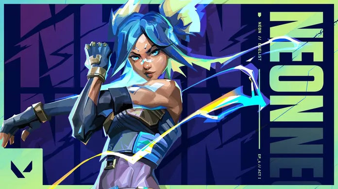Fade:Fade, uma caçadora de recompensas turca, usa o poder dos pesadelos para capturar os segredos dos inimigos. Personificando o próprio terror, ela persegue os alvos e revela seus medos mais profundos para, depois, destruí-los na escuridão.
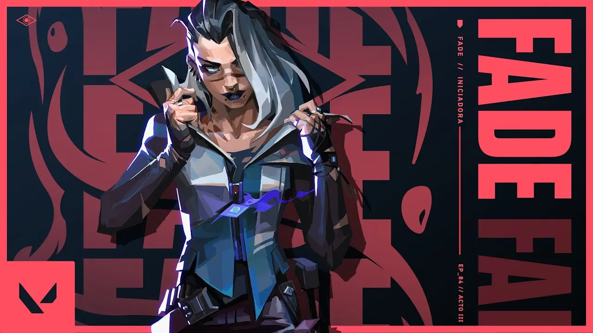